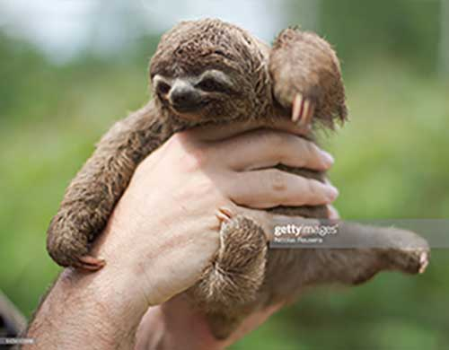

Miscellaneous
- Sloths are clumsy on land but are great swimmers.
- Sloths are arboreal animals, so they spend most of their time in trees.
- Sloths only urinate/defecate once a week.
- Contrary to their reputation, sloths only sleep about 10 hours a day.
